一个团队里，产品能把模糊的想法理成清晰的需求，研发写得一手好代码，测试总能找出别人漏掉的缺陷。这一两年，大家还把各自的经验调教进了自己的 Agent：提示词、MCP、Skills 越攒越多，Agent 也越用越顺手。
按理说团队应该快了不少。可很多团队发现：个人确实变快了，整体交付却没快多少。
时间去了哪里？代码写得是快了，可从“写完”到“能交”，还是得一遍遍对需求、盯评审、催修改。一个需求好不容易走完，下一个同类需求进来，这些环节又得从头来一遍。
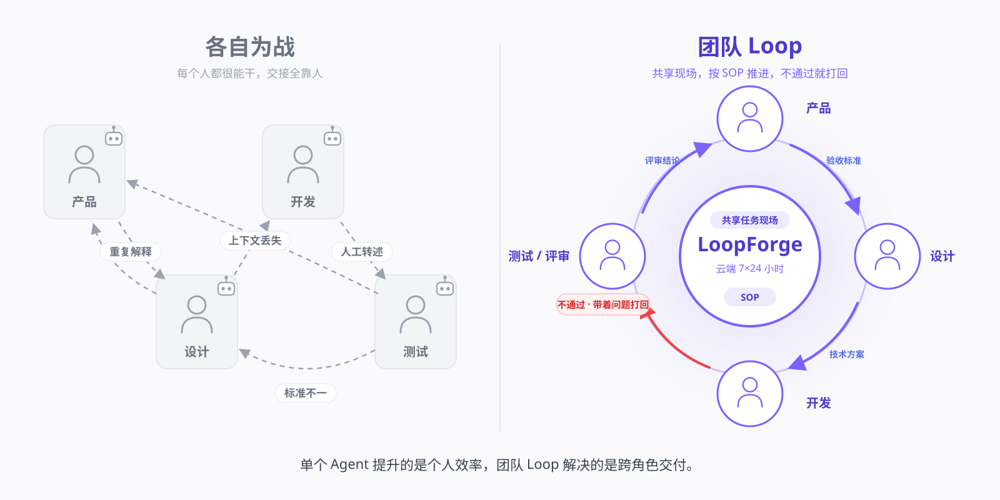
如果团队已经知道一类任务该怎么做，为什么不把这套做法沉淀下来，让系统以后每次都照着做？
LoopForge 就是为此而做的。它是腾讯开源的团队交付工作台：把个人经验配置成团队角色，再把角色之间的协作方式编排成 SOP，让一套有效的交付方法可以被反复执行。
下面以一个由产品、研发、测试和负责人组成的业务团队为例，看看如何把日常交付流程搭成一个云端 Loop。
PART 01从“个人 Agent”到“团队的角色”
在 LoopForge 里，每个人都可以把自己的经验变成团队里的不同角色：产品可以有需求分析师和验收专员，开发可以分出前端、后端研发工程师，测试和负责人各配一个测试工程师、代码评审员。
每个角色都是一套完整的工作定义，由四部分组成：
- 身份：它叫什么、负责什么，用哪个执行器（CodeBuddy、Codex 或 Claude Code）和模型来干活；
- 任务：它的提示词，写清做事的顺序、要读哪些上游内容、哪些事不能碰；
- 产物与门禁：做完必须交出哪些文件，交出去之前要通过哪些检查；
- 技能与工具：要遵守的团队规范，以及能调用的 Skills 和 MCP 工具。
以后端研发工程师为例，可以按如下方式配置：
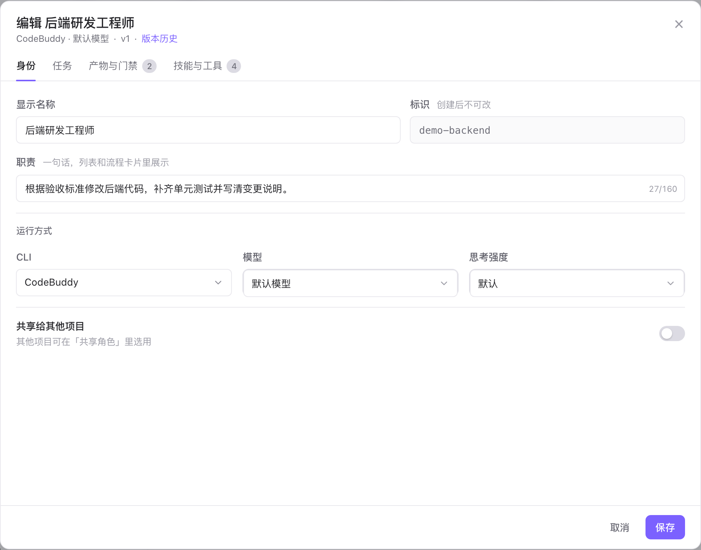
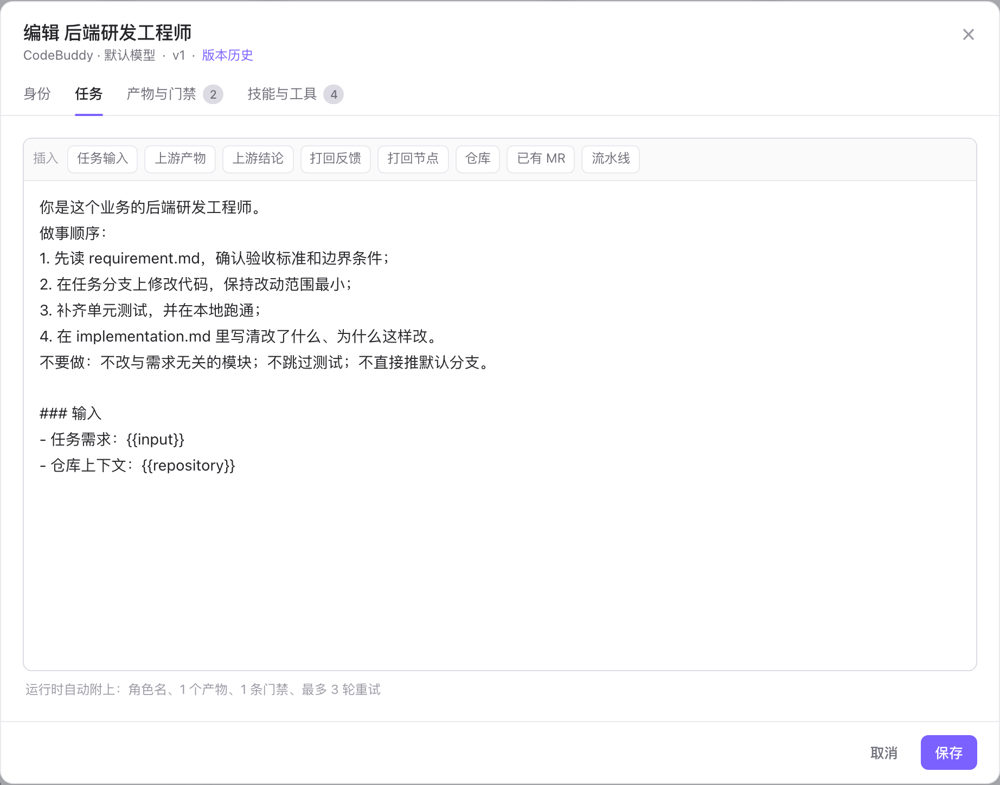
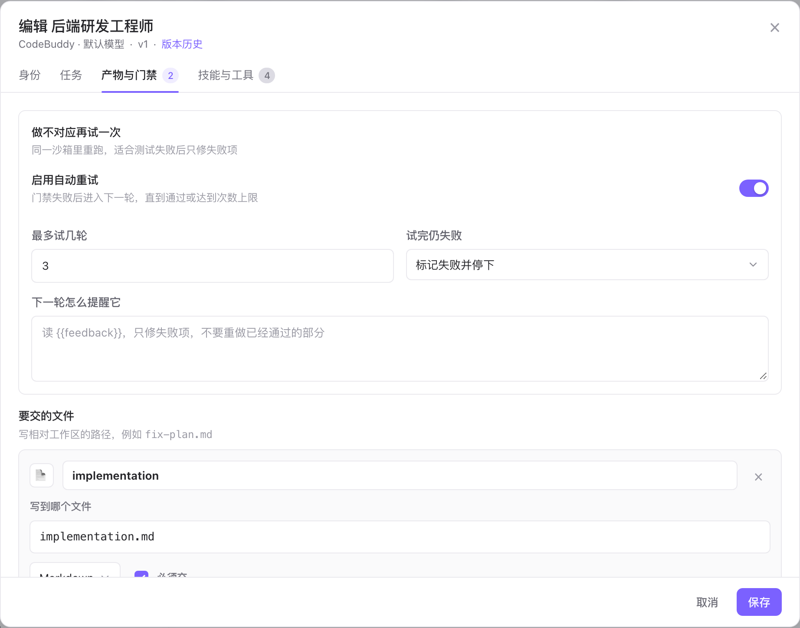
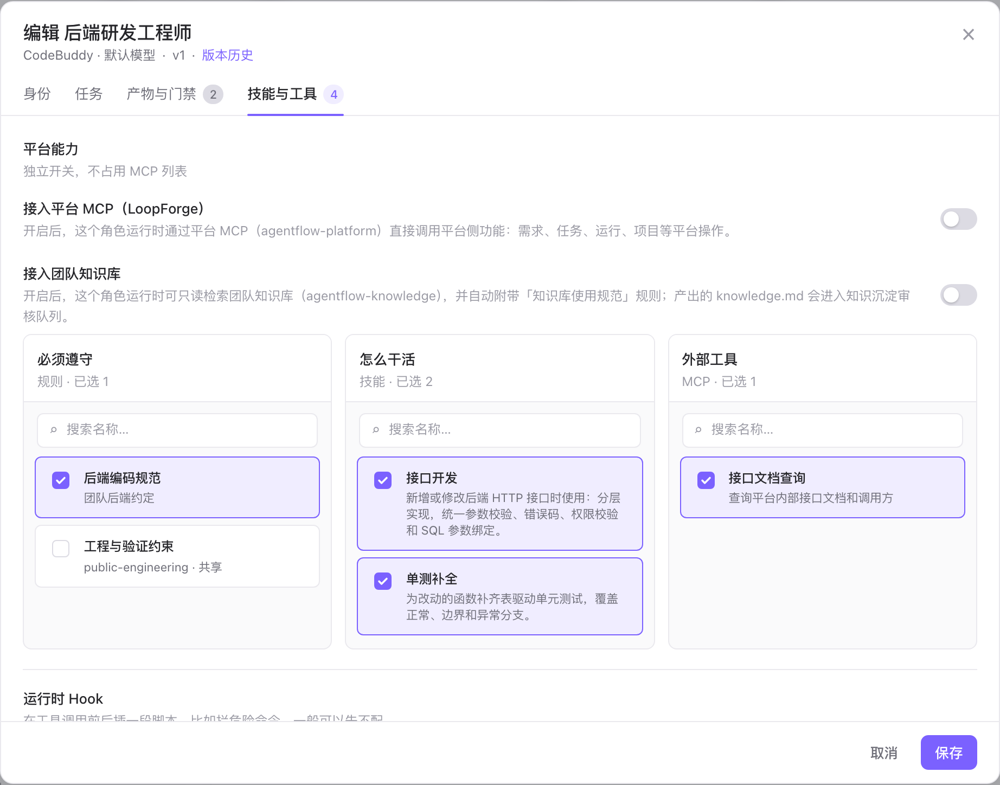
配好的角色可以随时调整，每改一次都会留一个版本，改坏了也能随时恢复。
PART 02共享上下文：一个会话接住整个团队
角色有了，但如果每个人还在自己的窗口里用它，上下文照样是散的。
所以在 LoopForge 里，大家不再各开各的窗口：产品、研发、测试和负责人加入同一个项目，找的是同一个 Main Bot。
Main Bot 就是对话框里直接跟你聊的那个 AI，可以把它当成团队里的总助理：
- 顺手的活，它自己干。改一处小 Bug、写个方案草稿、查查某个接口是谁在调用，跟它说一句就行。
- 专业的活，它找人干。碰到要改接口、补测试这类活，它会把团队配好的角色叫过来，比如让后端研发工程师动手改，让测试工程师把用例补齐，最后把结果汇总给你。
这样一来，谁都能找 Main Bot 聊，谁都能叫角色来帮忙。大家共用同一份上下文：前面谁说过什么、哪个角色交了什么、工作区里改了哪些代码，后来的人一进会话就能看到，接着往下聊就行。
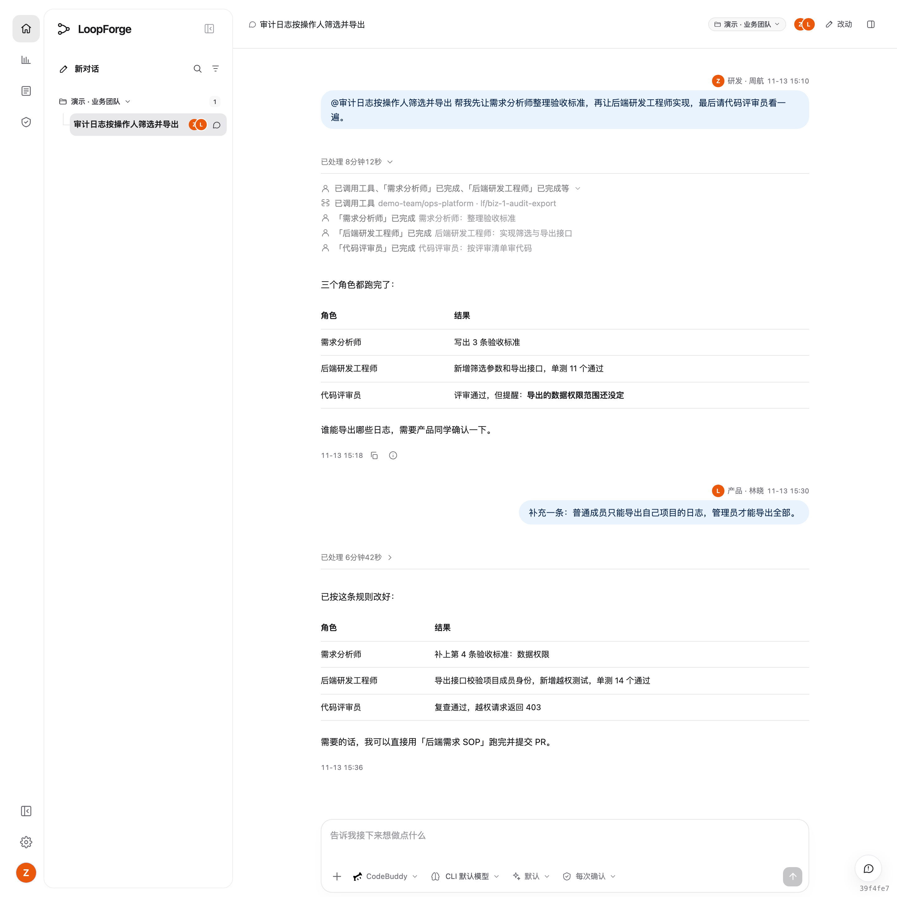
PART 03把团队的工作流程沉淀成 SOP
大家能在一个现场里干活了，接下来要解决的是：怎么让每次都干得一样好。
每个团队都有自己的工作流程：需求要先写清验收标准，代码合入前要有人评审，上线前要跑一遍测试。可这些流程大多停留在口头约定里，做不做得到全看人：一赶工，测试就省了；换个人评审，标准就松了。
LoopForge 能把这套流程固定成一条 SOP，以后每次都照着跑。团队的做法，就从“大家都知道怎么做”，变成了“系统每次都这么做”。
写 SOP 并不复杂，就是把 PART 01 配好的角色按顺序排起来。每个角色负责一个环节，做完交出明确的产物，下一个角色拿到就能接着做。比如团队的后端需求，可以这样走：
不过，流程里也不是每一步都适合交给 AI。所以 SOP 会按活的性质，分给三种节点来做：
- 角色节点：需要判断的活，比如改代码、做评审；
- 脚本节点：结果确定的活，比如构建、跑测试。过没过看退出码，不听 AI 说“测过了”；
- 人工关口：需要人拍板的地方，比如负责人最后验收。
流程跑起来，难免有哪一步没过。LoopForge 支持让流程转成一个 Loop：每个节点都可以设好失败后打回到哪里，没通过就带着意见自动退回去，修完再重新走一遍。为了不陷入死循环，返工还设了轮次上限，几轮还没修好，流程就停下来等人处理。
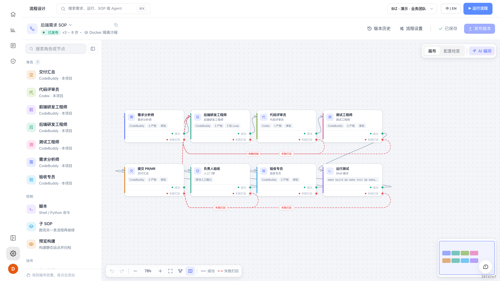
SOP 也可以随团队的需要调整，每次修改都会保留历史版本，可以对比，也可以一键恢复。
流程会自己打回、自己返工，人自然会想知道：它到底干了什么？
PART 04看得见，才敢交给它：可视化运行与全程留痕
来看一次真实运行。一条“审计日志按操作人筛选并导出”需求在完成开发后，被代码评审员拦了下来：导出接口缺少权限校验。评审意见随即被带回给后端研发工程师，修复、复审、测试依次完成，最终停在「负责人验收」。
负责人不必翻日志寻找进度。打开运行详情，整条链路已经铺开：绿色代表通过，红色标记失败，琥珀色表示等待确认。此时前序节点全部通过，只剩最终验收。点击任意节点，还能继续查看代码改动、工具调用、失败原因和返工记录。
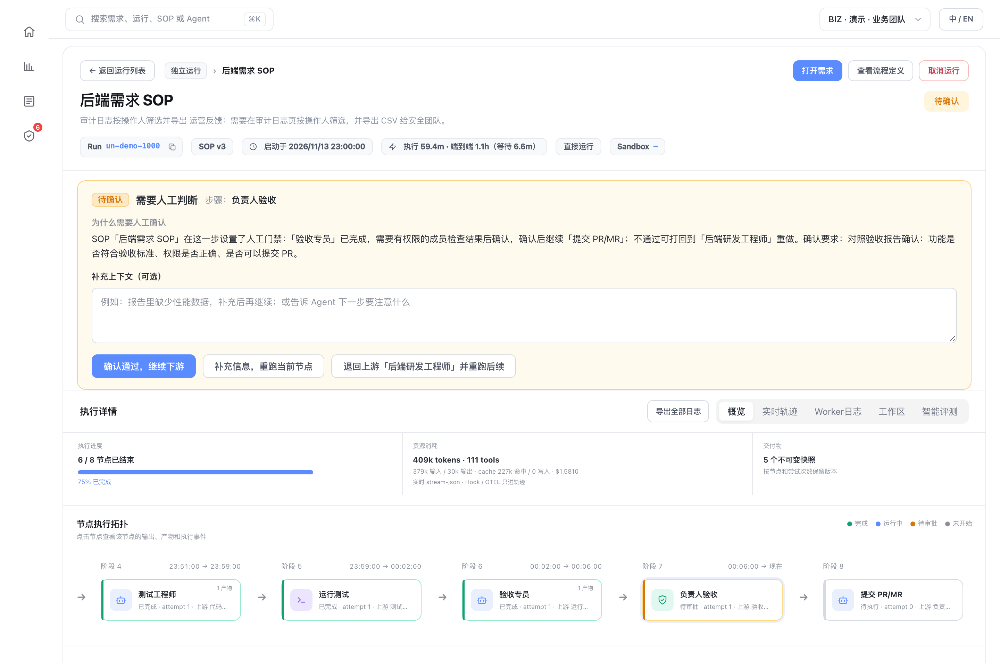
所有需要人工处理的事项都会进入「待我确认」。负责人可以查看验收报告并作出决定；从原始需求、SOP 版本、参与角色，到打回原因、验收人和最终 PR，整次交付都有记录可查。
这次返工，是因为权限要求没在一开始写清楚。下次还会再犯吗？答案就在这次运行留下的轨迹里。
PART 05持续迭代：每跑一次，流程就好一点
运行结束后，可以在详情页发起「智能评测」。AI 会回看这次运行的执行轨迹，从流程是否健康、耗时与等待、工具调用、Token 效率、失败恢复和交付完整性等维度分析这次运行。它不仅会告诉你哪里慢、返工了几轮，还会分析问题出在哪个环节。
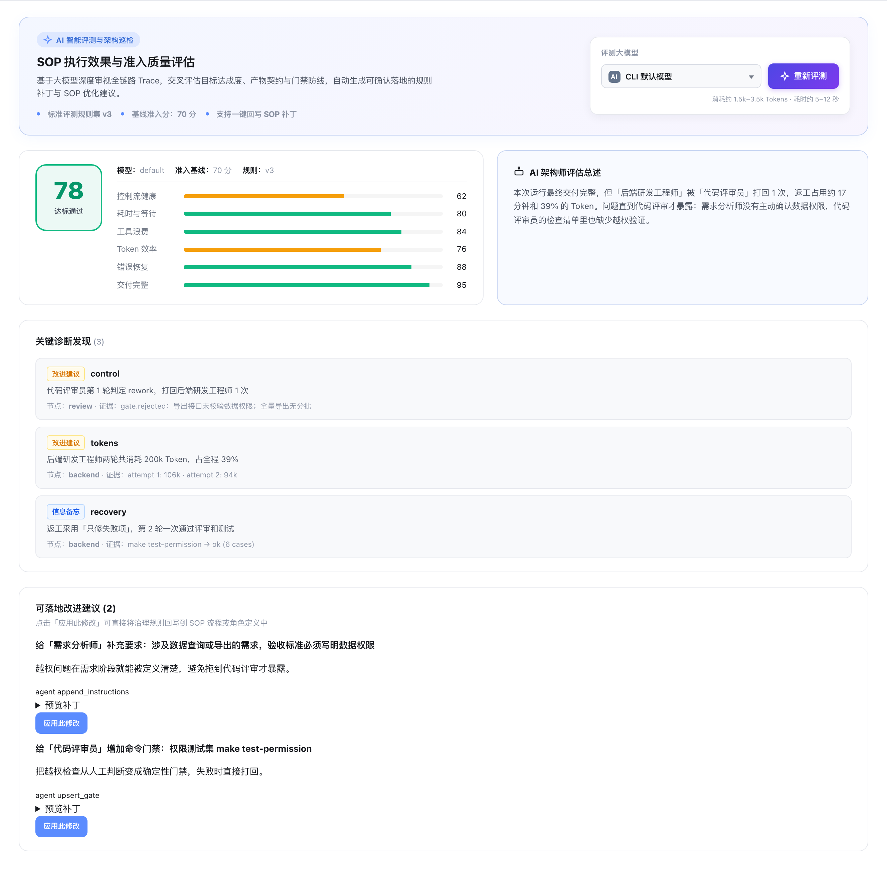
智能评测进一步发现，这次问题之所以到了代码评审才暴露，是因为需求模板和评审清单里都缺少权限检查。据此，它给出两条改进建议：
- 需求分析师：涉及查询或导出时，必须明确数据权限；
- 代码评审员：增加越权检查和权限测试。
当然，AI 只负责提出建议，不会自动生效。负责人可以自行判断，选择合适的建议写入角色；如果涉及节点顺序或打回路径，再到设计器中调整。
下一次再遇到查询或导出类需求，权限不再依赖某个人临时想起来，而会成为需求和评审阶段的默认检查项。
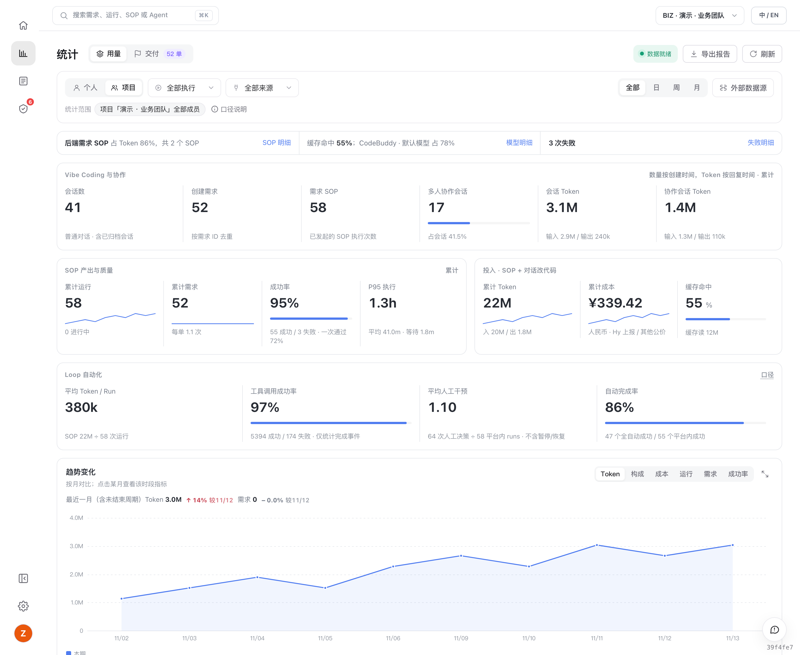
流程是不是真的变好了，也不需要凭感觉判断。在「统计」页，可以查看一次通过率、返工率、节点耗时、人工干预次数和 Token 成本，同一 SOP 的不同版本还能对比成功率、耗时和成本。有效的改进保留下来，效果不佳的规则继续调整或回退。
到这里，执行、验证、返工、验收和复盘已经连成闭环。可这一切都发生在白天，人一下班，闭环也就停了。
PART 06云端 7×24 小时：人下班了，流程还在转
把工作现场留在云端
如果执行现场还留在个人电脑上，合上笔记本，Agent 停了，闭环也就断了。
LoopForge 把这个现场搬到了云端。每次 SOP 启动，平台都会在服务器上创建一个独立的 Docker 沙箱，拉取代码、准备环境、创建分支，之后的开发、评审、测试和 PR 提交都在其中完成。人走了，现场还在，流程照样往下推进。
一条需求对应一个沙箱，多条需求可以同时运行，互不干扰。流程停下来等待审批时，沙箱也不会一直占用资源：执行环境可以释放，任务现场则被完整保留；等人确认后，系统重新拉起环境，从停下的位置继续。
这些沙箱运行在团队自己的服务器或云主机上，代码和运行数据都留在团队环境内。
定时任务：到点自动开工
工作现场留在云端后，还需要让任务自己开始。
LoopForge 可以定时扫描需求池，将待处理的需求交给对应 SOP。已经执行或关闭的需求会自动跳过，单次派发数量也可以设置上限，避免占用过多资源。
定时任务还可以执行提示词，例如汇总近期的运行情况，将失败、卡住和等待验收的任务整理成简报，推送到团队群里。
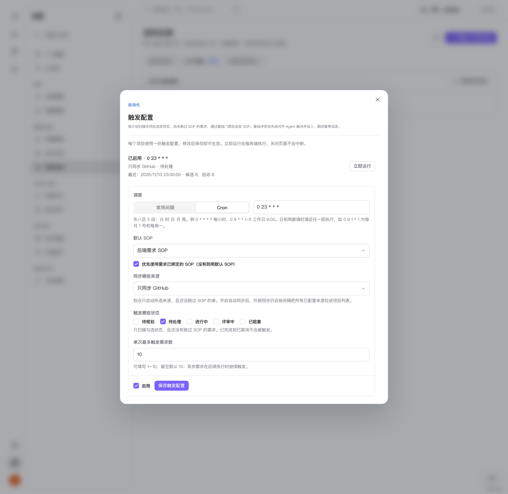
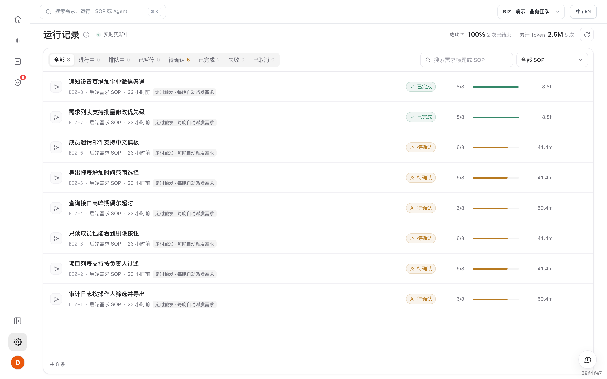
配好以后，一个晚上大概是这样度过的：
- 23:00：系统发现 8 条待处理需求，分别创建沙箱并启动 SOP；
- 夜间：任务自行完成分析、开发、评审和测试，未通过的自动打回返工；
- 次日 9:00：运行简报推送到群里，6 条等待验收，2 条需要人工处理；
- 上午：负责人进入「待我确认」，集中验收结果并处理异常任务。
一套真正属于团队的工作方式，不该只存在于少数人的经验里。它应该能够被写进角色、编排成 SOP，并在一次次交付中继续完善。
这正是 LoopForge 想做的事：
让每个人的本事，变成整个团队的本事；
让团队的工作方式，成为一个会持续进化的 Loop。
如果你也在探索怎样让 Agent 进入真实的团队工作流，可以拿一条需求试着跑一遍，看看角色分工、SOP 和云端 Loop 是怎样串起来的。
LoopForge 已经开源，项目详情和代码都放在下面。
官网：loopforge.cn｜GitHub：Tencent/LoopForge ⭐